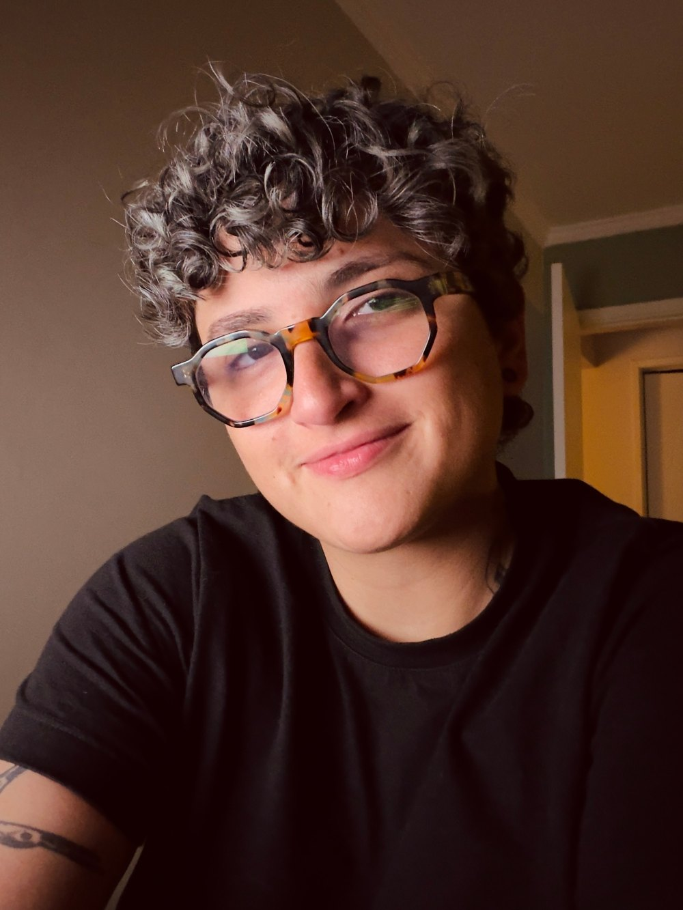

About

I’m a product designer with 10+ years of experience shipping digital products across big tech, fintech, agencies and early-stage startups, with a focus on payments, statements, onboarding and the back-office tools behind them. Today I’m a UX designer at Google. I’m comfortable owning a project end to end: discovery and research, interaction and visual design, prototyping, and handoff, and I’m known for going beyond my scope to align stakeholders, unblock teams and advocate for users.
I love zero-to-one work, simplifying complex systems and imagining where a product could go next, always in close collaboration with my team. I pick up context fast, build clear narratives, and naturally become the person people come to for a jam session. I bring optimism and care to every room, and I do my best work when I understand the why behind it.